Restaurant grec · Jambes · depuis 1972
LeZorba
Καλωσόρισμα · bienvenue
Mezze, grillades au feu de bois, moussaka et pâtisseries au miel, avenue Jean Materne. La famille Sopa vous accueille depuis 1982.
Midi et soir · fermé le mardi
- Grillades au feu de bois
- Tous les plats à emporter
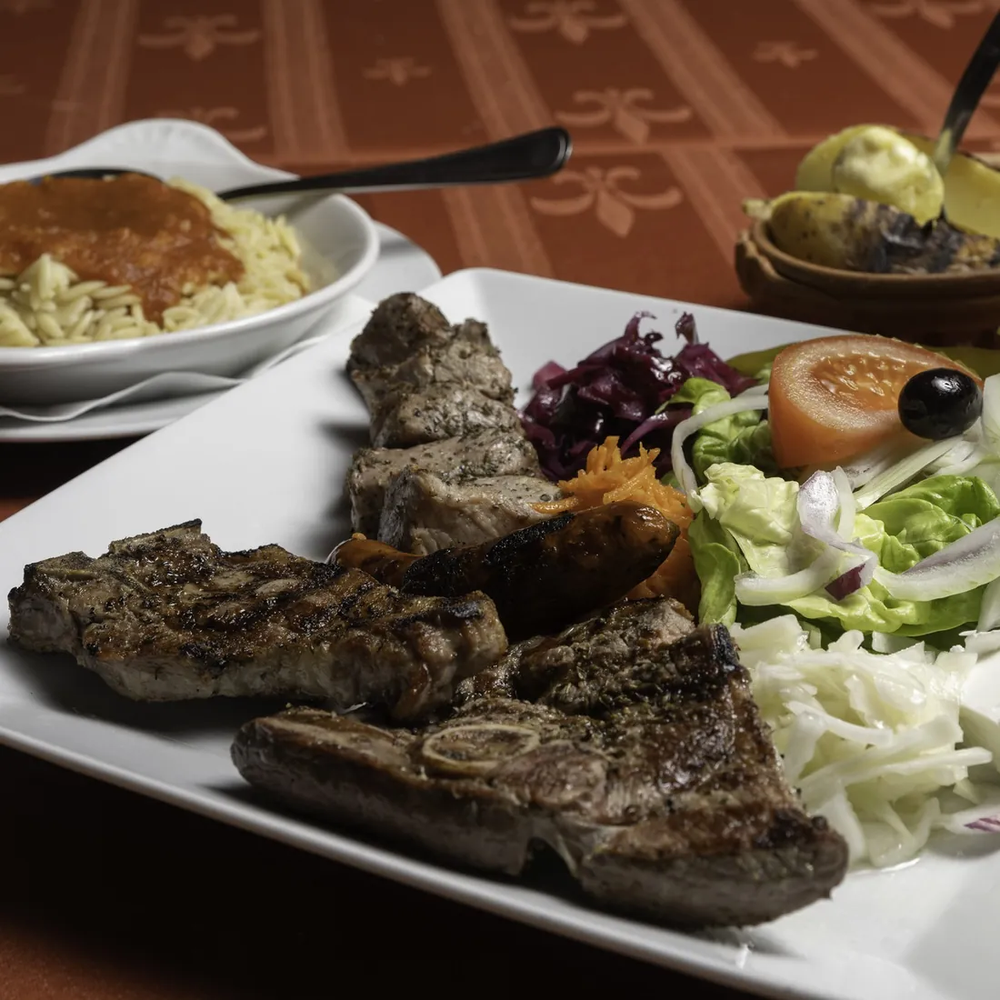
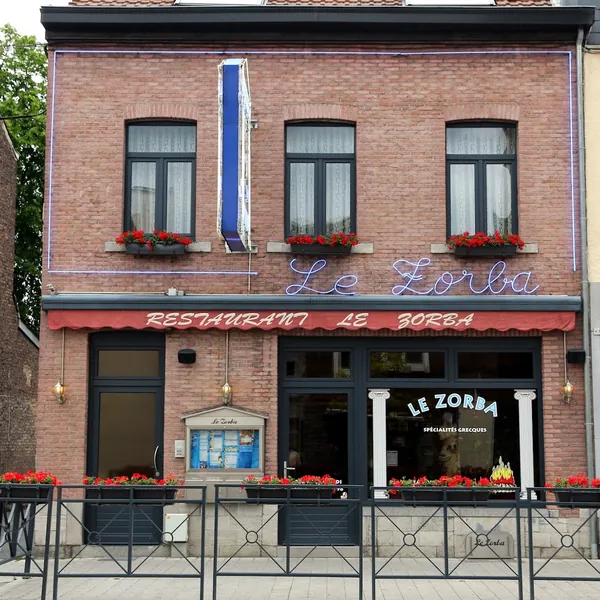
La maison
Une table grecque à Jambes, tenue en famille
Le Zorba existe depuis 1972. Depuis 1982, Monsieur et Madame Sopa Ekrem et leur fils vous y reçoivent, pour un repas en famille, un souper entre collègues ou une assiette à emporter.
« […] entendre parler grec dans un restaurant grec ne nous dérange pas 😅 c'est plutôt agréable et dépaysant. »Aurore D., avis Google, repas en famille pour les 14 ans de son fils
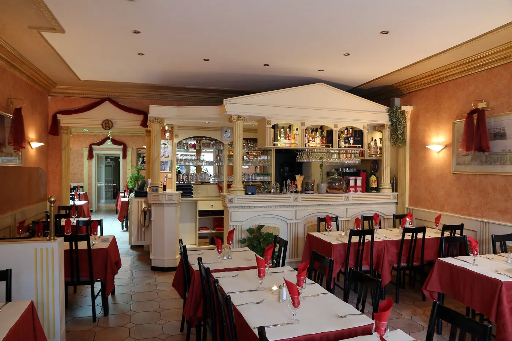
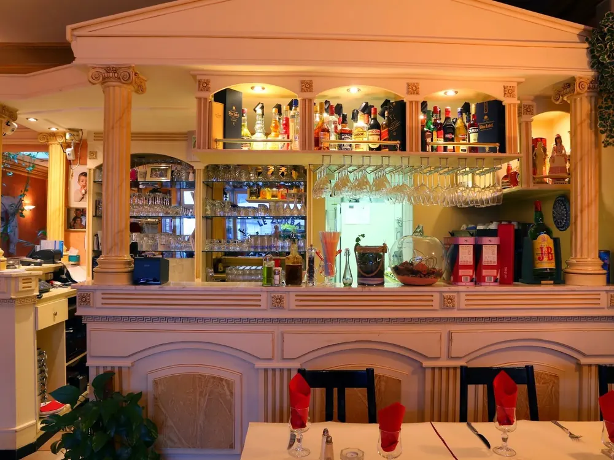
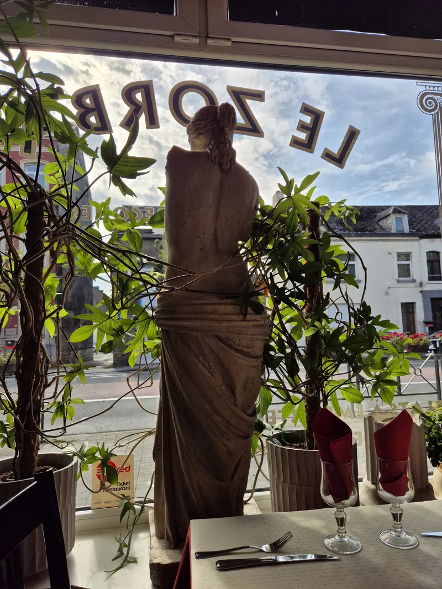
À table
Ce qui arrive dans l'assiette
Chaque plat est servi avec une salade mixte et un accompagnement au choix : pâtes grecques, frites maison ou pomme de terre au four.
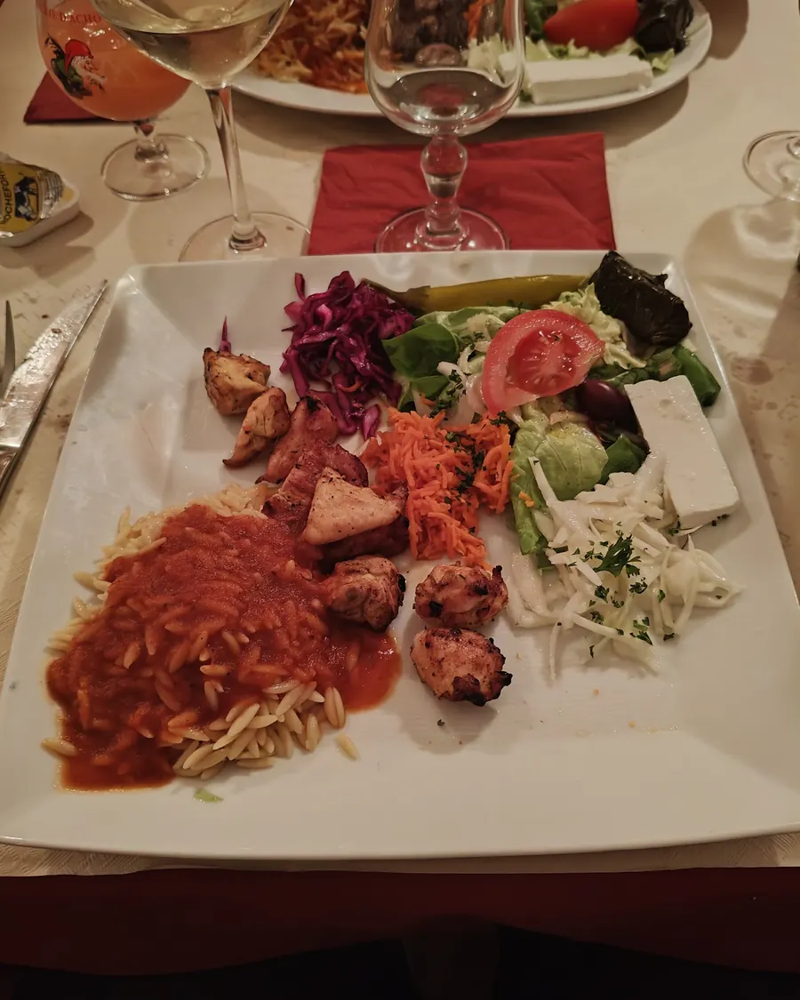
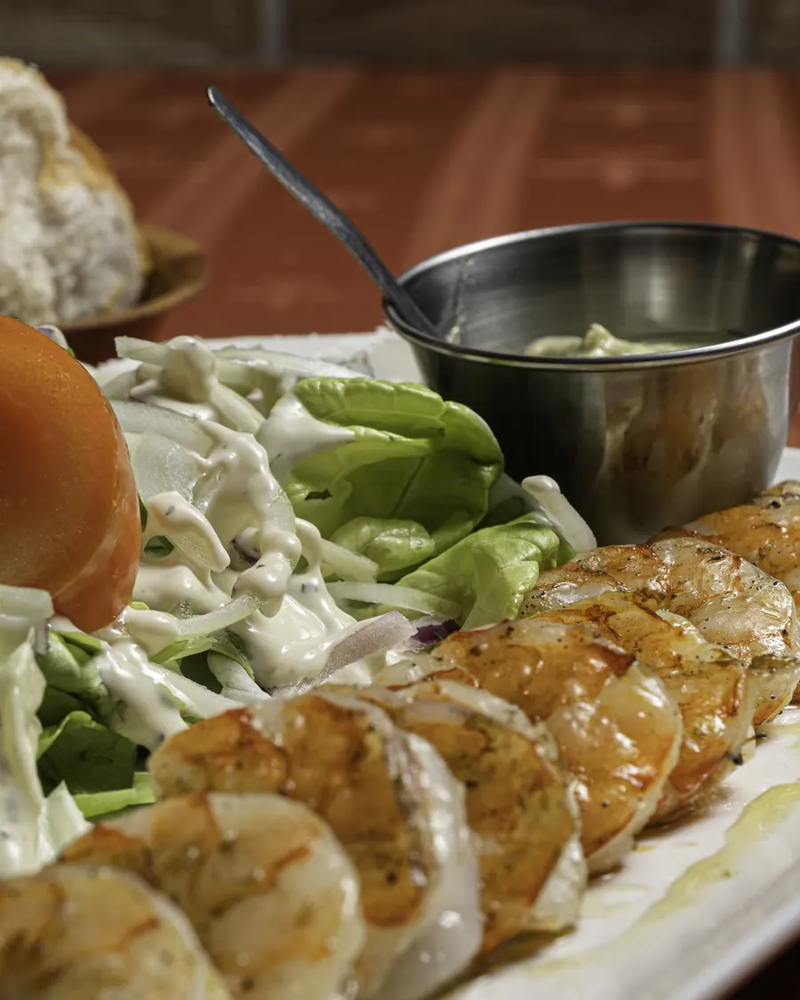
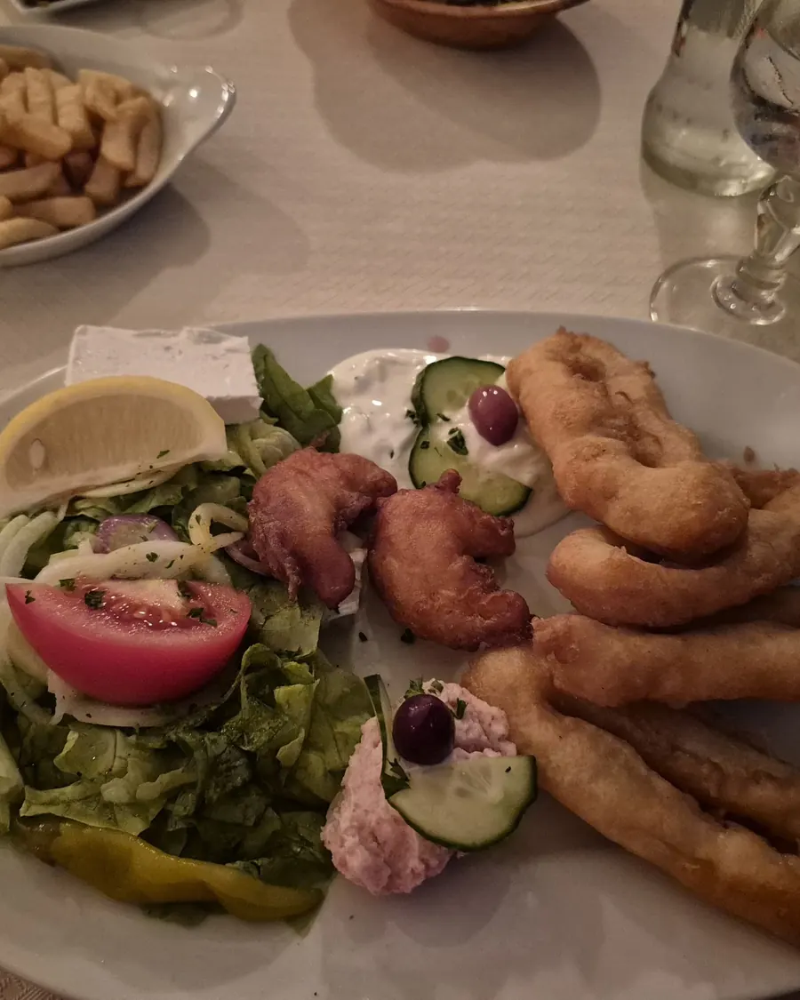
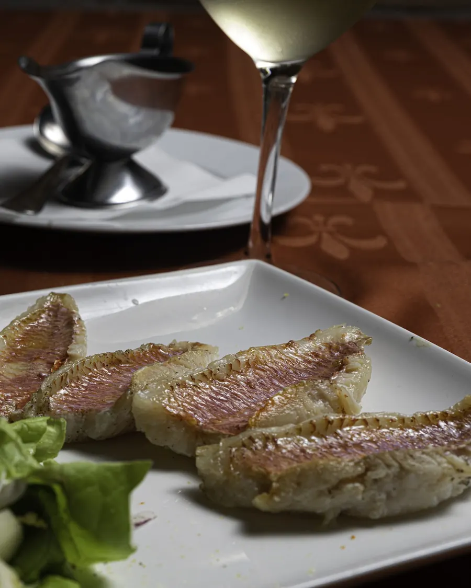
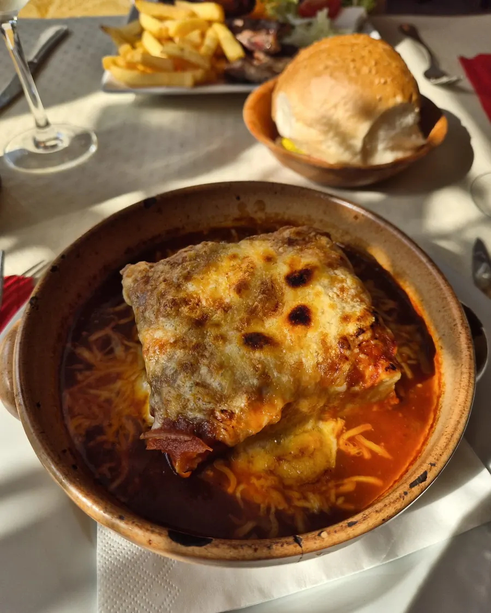
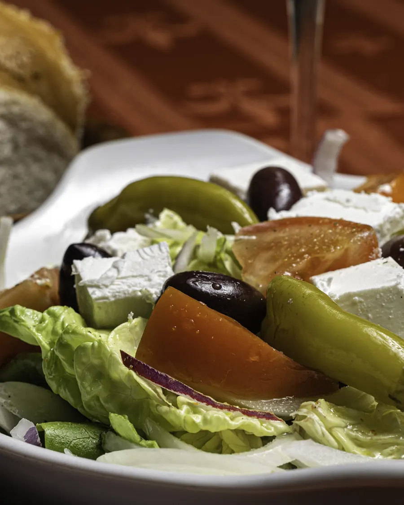
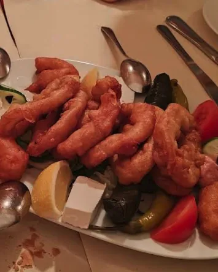
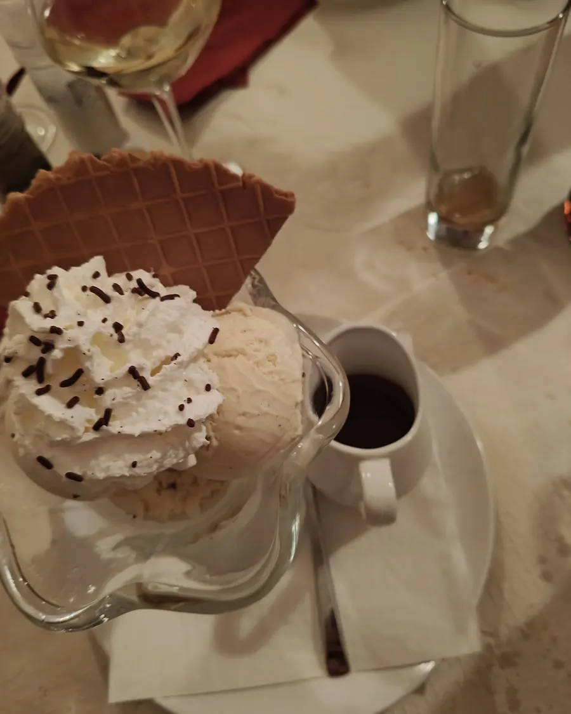
Faites glisser pour voir les plats
La carte
Extrait de la carte
Les grands classiques de la maison, avec les prix de la carte en vigueur.
Entrées chaudes et froides
Mezze chaud, pour 1calamars et scampis frits, tarama, tzaziki, feuille de vigne, feta, salade18,00 €
Mezze chaud, pour 234,00 €
Mezze chaud, pour 460,00 €
Mezze froidfeta, feuille de vigne, tarama, tzaziki, piment, olive16,00 €
Tzazikifromage frais, ail, concombre16,00 €
Tiropitakia au fromagepâte filo farcie à la feta, salade et tzatziki, 2 pièces16,00 €
Feta grillée18,00 €
Dolmasfeuilles de vigne farcies de riz et haché de bœuf, 4 pièces, tomate et ail ou crème citronnée20,00 €
Poulpesauce tomate légèrement piquante20,00 €
Grillades au feu de bois
Brochettes à la grecquespécialité26,00 €
Brochettes de poulet24,00 €
Merguez24,00 €
Brochettes de bœuf28,00 €
Steak28,00 €
Tranche de gigot d'agneau29,00 €
Côtes d'agneau29,00 €
Plat mixtegigot, côte d'agneau, brochette et merguez31,00 €
Plats de la maison
Mezze en platcalamars et scampis frits, tarama, tzaziki, feuille de vigne, feta, salade26,00 €
Moussakapurée, haché de bœuf, aubergine, sauce tomate, gratinée, piquante ou non24,00 €
Youvetsi à l'agneaumijoté à la tomate, légumes, pâtes grecques, feta, gratiné · au poulet 24 €, aux légumes 22 €26,00 €
Rougets poêléssauce tomate et fines herbes26,00 €
Boulettes à la grecquehaché de bœuf à la sauce tomate22,00 €
Scampis décortiqués, 9 piècesail, citronnés, tomate, du chef ou grillés au pesto29,00 €
Double poulpesauce tomate, légèrement piquante30,00 €
Salade grecquefeta, olive, piment, calamars et scampis poêlés, saumon fumé, feuilles de vigne, œuf27,00 €
Une salade mixte et un accompagnement au choix : pâtes grecques à la sauce tomate (ou nature), frites maison ou pomme de terre au four beurre à l'ail.
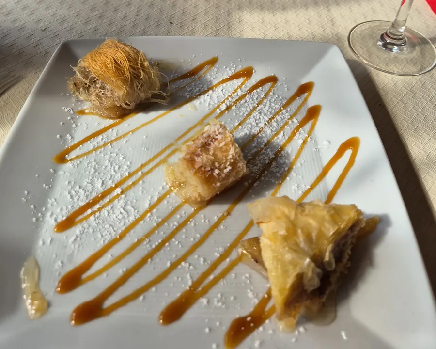
Desserts
Symphonie grecqueles 3 pâtisseries grecques9,00 €
Baklavanoix, noisettes et miel9,00 €
Kadaifigâteau aux cheveux d'ange9,00 €
Yaourt à la grecqueau miel et aux noix9,00 €
Café grecsketos ou metrios4,00 €
Pour les juniors
Boulettes à la grecque15,00 €
Moussaka15,00 €
Brochetteà la grecque, bœuf ou poulet15,00 €
Côtes d'agneau, 2 côtes15,00 €
Assiette de pâtes grecques10,00 €
À boire, à la grecque
Ouzo8,00 €
Mavrodaphneporto rouge grec8,00 €
Mythos, 33 cl6,00 €
Vin maison au verredont un blanc résiné5,00 €
Metaxa 5 étoiles8,00 €
Une allergie ? Prévenez le serveur.Tous les plats existent à emporter.
Réserver
Une table au Zorba
Le jour, le service, le nombre de couverts : la demande est faite en trente secondes, de jour comme de nuit.
Avis
En famille, entre collègues
Ce que les clients écrivent sur Google après leur repas au Zorba.
Parakaló
Six mots de grec avant de passer à table
Le petit lexique qui accompagne la carte du Zorba.
Horaires et accès
Avenue Jean Materne, à Jambes
| lundi | 11 h 30 – 14 h · 18 h – 22 h |
|---|---|
| mardi | fermé |
| mercredi | 11 h 30 – 14 h · 18 h – 22 h |
| jeudi | 11 h 30 – 14 h · 18 h – 22 h |
| vendredi | 11 h 30 – 14 h · 18 h – 22 h |
| samedi | 11 h 30 – 14 h · 18 h – 22 h |
| dimanche | 11 h 30 – 14 h · 18 h – 22 h |
Le paiement se fait par table entière : une addition, un Bancontact.
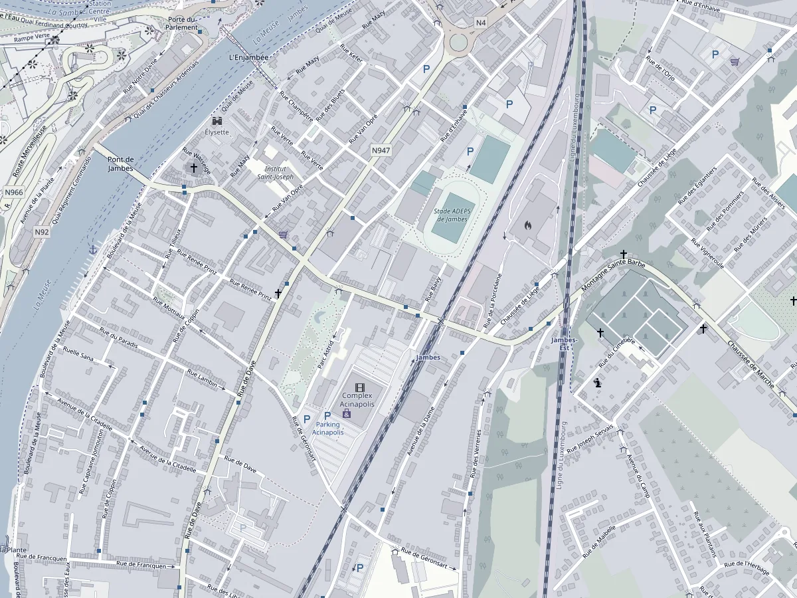
Itinéraire © OpenStreetMapÀ emporter
Tous les plats de la carte se commandent à emporter. Un coup de fil au 081 30 31 98.
Un événement
Anniversaire, fête de famille : menu adapté le samedi soir, jusqu'à 10 personnes. Écrire au Zorba